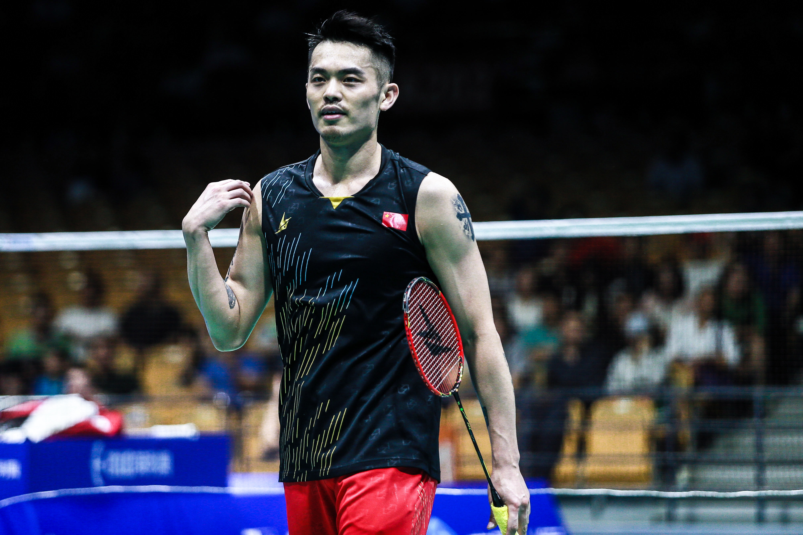

羽毛球运动
为什么学羽毛球？ 强心肺、练反应、低门槛、高乐趣。无论是学校社团还是城市球馆，都能轻松加入。
羽毛球是一项老少皆宜的运动，既能锻炼身体，又能增进社交。它节奏快、对抗强，既能增强体质，也能提升思维与判断能力。
与篮球、足球不同，羽毛球场地占地小，装备门槛低，一支球拍、一筒羽毛球就能开打，因而成为中国最受欢迎的运动之一。
提示：按 ← / → 或空格切换，点击右下角按钮也可导航。

羽毛球的魅力
🏃♂️ 健身
每场可消耗 400~600 卡路里。
🤝 社交
双打协作，增强沟通与配合。
🧠 专注
高速来球，锻炼反应和判断。
小历史
羽毛球起源于19世纪的英格兰，1900年前后传入亚洲。如今，中国、印尼、马来西亚、丹麦等国均为世界强国。
羽毛球规则：计分
采用 21 分制，一局先到 21 分并且领先 2 分的一方获胜。如果双方打成 29 平，则先到 30 分的一方获胜。
羽毛球规则：发球
发球必须斜线发到对角场区，球拍击球点需低于发球员的腰部。双打时，奇数分从左发，偶数分从右发。
羽毛球规则：场地
单打场地：宽 5.18 米，长 13.4 米。
双打场地：宽 6.1 米，长 13.4 米。
中间由 1.55 米高的球网分隔。
快问快答 🎯
羽毛球一局多少分？
运动数据
推荐装备 🏸
查找附近场馆 📍
想要开打？点击下方按钮，快速搜索你附近的羽毛球馆：